只有在你检视内心深处时，你的视野才会变得清晰。向外探究的人只是在做梦，朝内挖掘的人终将开悟。
——［瑞士］荣格（Carl Gustav Jung）
案例研究指为了达到更深入、详尽的研究而对单一的个体或事做调查、了解和分析的研究。它具有更大的可行性、简便性等特点。
因为课堂教学是教育的重要阵地，所以这一章为了更深入地对小学数学广角教学现状进行分析，结合第5章教学调查研究的情况，以课堂教学为研究对象，选取4节优质课和4节常态课作为研究对象。采用定性研究和定量研究的方法，以课堂观察表格作为主要研究工具，从教学目标、课的设计、教学内容、教学方法、使用教科书、教师素质这六个方面进行分析，归纳数学广角优质课的教学特征；采用分析课堂记录和教师访谈的方式，分析常态课教学的特点。
优质课分析，以定量分析为主。反复观看教学视频，将教学视频转录成课堂实录，对课堂语言、师生互动、教师提问、课的结构等方面做出分析。
“全国深化小学数学教学改革观摩交流会”是全国小学数学界层次高、竞争激烈、规模和影响大的赛事。它集中展示了我国小学数学教学改革的最新成果。由于每个省（自治区、直辖市）只能派一名教师代表参加，参赛教师都是小学数学界的教学精英，因此活动上展示的课也将成为引领数学课堂教学的风向标。每一次赛课，都会覆盖小学的数与代数、空间与图形、统计与概率这三个领域。其中，数学广角作为人教版小学数学的独立编排单元，由于它的思维含量高，对教师的教学能力有颇高的挑战性，因此数学广角也越来越成为赛课教师选取的主题。本研究从第八届、第九届、第十届“全国深化小学数学教学改革观摩交流会”中选取4节数学广角的课，将其确定为本组个案分析对象，具体的教学主题为2节植树问题、1节数字编码和1节找次品。
【本节内容的课堂实录代码说明】
T表示教师；
S表示学生个人；
W表示全体学生或者大部分学生；
A表示教师与学生一起；
（ ）表示时间说明；
［ ］里面的内容表示操作。
教学目标是指在教学活动中期待学生学习达到的效果，是整节课的出发点和归宿，它决定课堂教学的方向，是课堂的灵魂，是教师选择教学方法、准备教学材料、进行教学活动设计、评价学生学习效果的重要依据 [1] 。
目前在教学目标制定中存在不同的问题：对教学目标的忽视，会导致出现先完成了所有的教学流程设计最后再补上教学目标以及设计的教学目标的情况；缺乏情感；价值观的内容、目标不明确等，比如下面这个教学目标示例：
（1）引导学生经历笔算除法试商的过程，使其初步掌握调商的方法。
（2）进一步培养学生的迁移能力和抽象概括能力。
（3）感受数学与生活的紧密联系，培养学生养成认真计算的学习习惯。
——人教版四年级上册《笔算除法2》
教学目标解析：
（1）本节课的教学关键是使用竖式计算除法，例如，在240÷58和196÷31这两道题中，运用笔算除法解答时：①商放在哪一位？②怎么试商？③怎么调商？
（2）从X教师实际的教学情况可以看出，该教师的实际教学很有条理和层次，注重学习方法的指导，而且情感目标渗透较好，能充分地调动学生的学习积极性。但该教师制定的教学目标很简单、笼统，即该教师制定的教学目标和实际教学不相符。后来通过X教师了解到：他没有在意制定的教学目标，没有意识到教学目标的重要性，在设计好教学流程之后，才从网络上查找并选取了这几条教学目标。
对这节课的教学目标的修改建议是：
（1）知识与技能目标。经历探究笔算除法试商的过程，了解除数是两位数的除法，将除数估计成整十数再试商；理解调商对除法计算的必要性。
（2）过程与方法目标。
①理解把除数看成整十数来试商的方法，掌握用余数和除数的比较来进行调商的方法。
②通过笔算除法试商、调商的过程，渗透数学的化归思想，在具体的情境中学习初步的迁移和抽象概括。
（3）情感、态度与价值观目标。在与同伴（老师与同学）的合作交流中，体验到学习数学的成就感，增强数学学习的兴趣。
由于数学广角是教师们较陌生的一块内容，缺乏相应的教学经验，因此很多教师对增设数学广角这部分内容的目的不了解，进而容易在制定目标的过程中出现偏差，将教学目标放到了解题上，过于注重生活、实践、探究而没有思考，这样教学就无法完成积累学生的数学活动经验、培养学生创新精神和思维能力的初衷。
1．目标预设
在《数学课程标准》（2011）中与数学广角直接相关的总目标是：
（1）知识技能。参与实践活动，积累综合运用数学知识、技能和方法等解决简单问题的数学活动经验。
（2）数学思考。在参与观察、实验、猜想、证明、综合实践等数学活动中，发展学生合情推理和演绎推理的能力，使其清晰地表达自己的想法。让学生学会独立思考，体会数学的基本思想和思维方式。
（3）问题解决。让学生初步从数学的角度发现问题和提出问题，综合运用数学知识解决简单的实际问题，增强学生的应用意识，提高学生的实践能力，让学生获得分析问题和解决问题的一些基本方法，体验解决问题方法的多样性，发展创新意识，让学生学会与他人合作交流，初步形成评价与反思意识。
（4）情感态度。让学生积极参与数学活动，对数学有好奇心和求知欲。学生在数学学习过程中，体验获得成功的乐趣，锻炼克服困难的意志，建立自信心；体会数学的特点，了解数学的价值；养成认知勤奋、独立思考、合作交流、反思质疑等学习习惯；形成坚持真理、修正错误、严谨求实的科学态度。
课程标准中描述的目标是课时计划、制定教学目标指南。由于在研究的过程中，通过网络查找、联系相关老师还是无法找到所选优质课的相应教案，因此无法直接对教学目标的设置、写作进行分析，只能够通过观看录像课，对4节优质课的教学目标的达成情况做一个概括。
2．目标达成
教案中预设的教学目标在实际的教学中可能无法完全实现，而在实际教学中也可能达到一些在设计中没有的教学目标。因此，我们从达成的目标看，这4节课的执教者教学目标的设计是不能够对教师的目标设计进行判断的。做这样一个分析的原因在于：从总体上把握教师对学生各方面发展的认知侧重点。
这4节课反映出来的情况是：教师都会创设学习情境促进学生学习，并能根据相关内容选取教学方法进行教学，教授相关内容的核心概念，探究建立模型，在教学中鼓励学生从多角度回答问题。教师注重探究，采用小组合作、个人学习的方式经历数学活动，积累数学活动经验，注重学生的情感体验。
这几节课都很注重数学知识的获得，注重学生的思考与亲身经历，注重学生数学学习兴趣的激发，注重学生的合作意识和探究精神。
通过他人对课堂观察的研究，有研究者将一堂课的教学活动归纳为：复习、教学新内容、练习、总结和布置作业5种活动；也有研究者将其归纳为7种基本的教学活动，它们分别是：预期设置、目标呈现、新内容学习、检查学生的理解程度、指导练习、独立练习和小结。本次研究采用7种基本教学活动的分类方法。这7类教学活动的界定如下：
（1）预期设置。每节优质课的教师都会想办法激发学生的学习动机，吸引学生的注意力，包括通过复习与新课联系紧密的先前知识；通过某些有趣的活动设置悬念等方式。
（2）目标呈现。在课堂上，教师详细说明学生应该完成的任务，让学生知道教师期待自己怎么做，自己应该学到什么，包括目标展示、口头说明等。
（3）教师的讲授与示范。教师的讲授与示范指教师向学生提供成功达到目标的信息，或者直接讲授知识原理，包括教师的讲解、示范、说明要求。
（4）指导探索。指导探索指为了达到目标，讲授过程中设计的各种学习方式，主要包括引导完成例题、学生板演例题、小组合作完成任务及展示、个人探究和汇报。
（5）检查理解的程度。在学习的过程中，教师要检查学生是否掌握了所教授的概念、原理、技能，有点类似于练习，但是又与练习不同，设置这个环节的目的是得到学生学习结果的反馈，为下一个环节的学习做铺垫，有助于教师做教学决策。这部分内容主要包括举例拓展、在完成一个教学任务后让学生解释说明等。
（6）练习。学生独立或者小组完成教授新课之后的任务，是对新学知识的运用、巩固，包括解决一个问题、做一个实验、填写学习单、写一份报告等。
（7）小结。小结指教学过程中完成一个教学任务后所做的总结和整节课结束之际做的大总结，主要是对一段教学时间里的知识、原理、方法的概括，帮助学习者形成更清晰的思路，同时为下一环节的学习做铺垫。总结的主体可以是学生、可以是教师，或者是师生双方共同总结。
根据以上分类，记录每节课中的每一个教学活动的起止时间，按照每节课中每类活动的更替次序以及每类活动的时间累积所占总课时的百分比，用Excel软件绘制出结构图。图6.1所示为按各类活动更替次序和时间量绘制的具体课程结构。
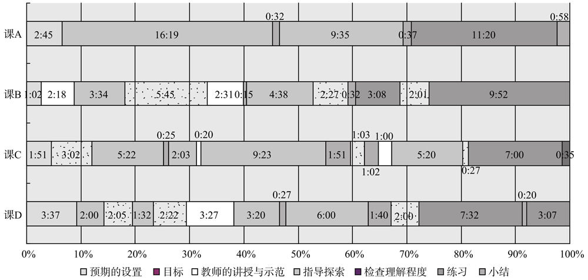
图6.1 按各类活动更替次序和时间量绘制的具体课程结构
由图6.1可见，这7类教学活动以不同的顺序组合在一起，构成了课的结构，由于教学内容和教学目标的不同，这些活动的顺序各有特点，呈现出不同的特征。根据教师教学的需要，有一些教学活动没有被使用，例如预期的设置是这4节课都没有选用的教学活动；课A也只选用了4项活动，没有教师的讲授与示范和检查理解程度这2项活动。
这4节课都以不同的形式导入开始，激起学生的兴趣，或者引发学生的好奇，在引出新教学的内容后，开始指导学生探索、反馈、讲解、总结、练习，但是在时间的分配以及活动之间的衔接上有很大区别。其中小结在这4节课中最少出现了2次，最多出现4次，且都出现在指导探索的期间或者指导探索结束后；教师的讲授与示范所占时间最少，课堂大部分时间用于指导探索，其次用于练习。与课A相比，课B、课C和课D在活动更替方面更加频繁，各活动情况比较分散，课A指导探索和练习持续的时间比较长，而课B、课C和课D中的指导探索活动相对比较分散。图6.2所示为按各类活动时间累计绘制的具体课程结构。
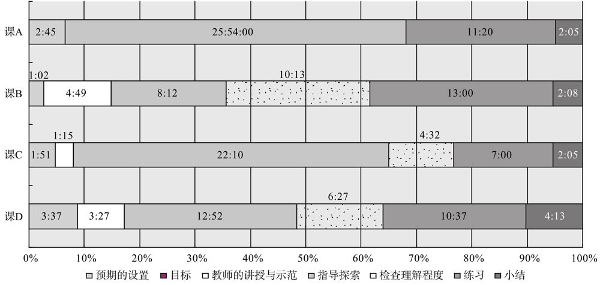
图6.2 按各类活动时间累计绘制的具体课程结构
由图6.2可知，教师的讲授与示范和小结所占时间较少。在这4节课上都出现教师的讲授与示范次数少、时间短的情况，这个与“课上教师讲多了就不能凸显学生的主体地位”的观念有关系。所以，教师都尽量不直接给学生讲解相关知识，而是让学生通过自己的探索而获得知识和发展思维。但是到底在哪里该说，哪里不该说，说到什么程度是值得深思的。总结知识的次数不算少，最少的为2次，最多的有4次，但是时间短。虽然大家都知道总结的重要性，在有限的40分钟课堂里却不知道怎么做好总结，让总结真的发挥应有的功能，培养学生归纳、反思的能力。而且在课程末尾总结的时候，教师为了让学生总结而提出的问题似乎有些空洞和单一。比如：
课B：
T：你有什么收获和感想要和大家分享吗？
S：我的收获是：如果两端都没有障碍物，那么此时棵树等于段数加一，这样此题就算出来了。
T：如果两端都栽需要用树多少棵？
S：需要用棵树等于段数加一。如果一端有障碍物，棵树等于段数；如果两端都有障碍物，棵树等于段数减一。（师在黑板上指示）
课C：
T：这堂课就快要结束了，说说你的感受吧？你有什么收获要和大家一起分享吗？
S：所有复杂问题的背后都有简单的问题，要从简单的问题入手来解决复杂的问题。
T：说得真好，这是一个解决问题的方法。
S：解植树问题运用画线段图的方法很方便。
T：好的。
S：画线段图能够解决问题。
T：线段图是我们数学解决问题的工具。
S：要看清楚是两端都植，还是只植一端。
学生在回答这类问题时，思路一般没有打开，有可能是问题本身的原因，也可能是学生在目标不明确时思路不清晰的原因，因此关于总结的提问需要扩展，应该抓好这个机会培养学生的多元认知能力。
每节课的练习都集中在课的后半部分，且在探究之前都没有明确展示期待学生达到的目标。没有明确目标，一方面可以让学生在接下来的每一步中都产生新鲜感；另一方面不利于学习能力较弱的孩子学习，有可能出现一节课结束了，他都不明白这节课的重点是什么、他有什么收获的情况，也不利于学生对学习结果的自我检测。
总之，从课程的结构可以看出，新内容的教学和练习占了课堂的大部分时间，它们是课堂的主体，占50%以上的时间。其中练习主要集中在课堂的后半部分。新内容教学中教师的讲授与示范较少，以指导探索为主。
这里的教学内容主要指的是情境创设、教学的新内容、练习的内容。观察4节课，出现的情况是：4节课的情境创设联系生活，开启探索。教学的新内容来源于教材，根据教学参考书的课时建议授课或者根据教材组合了几个课时的内容。练习内容符合新教学内容，难度适中、有层次。
1．情境创设联系生活
4节课的情境创设都联系生活，与学生的生活息息相关，利于激发学生的学习兴趣。具体的联系生活实际的情境创设有两种情况：一种是把生活直接作为情境，引出教学问题或者教学主题；另一种是将数学知识用到生活实际中，这个较难理解，比如，课D的情境创设。具体如下：
T：同学们知道我是谁吗？很多同学在屏幕上找到答案了，来齐读一下，开始。
S：黑龙江省哈尔滨市中山路小学王开杰。
T：那王开杰又是谁呢？有没有认识的？你说。
S：王开杰就是你。
T：是我吗？
S：是。
T：真的是我吗？
S：是。
T：咱们一起来看一下，如果在百度上输入王开杰，我们能够得到像这样的网页600多页，看来啊，关于我的信息还真不少，咱们选取其中的5条，一起来看一下这5条信息中描述的王开杰都是我吗？
S：不是。
T：哪一条说的是我？哪些又不是？请说明理由。那名同学你来说。
S：第一条和第二条不是您，因为第一条说的是失散多年的母亲，而你是男的不是女的。
T：性别不对，同意吗？
S：同意。
T：很好。其他同学呢？你来……
S：我认为第二条也不是，因为写的是已经被枪决了。
T：与事实严重不符，对吗？好，接着说，谁来？那个同学。
S：我觉得第三个也不是，因为老师您是哈尔滨人，而不是重庆人。
T：你真善于观察，抓住了一个关键词——重庆，地址不符，很好，请坐。光找不是的了，说说哪一条可能是我，并说说理由。
S：我认为第四个可能是您。
T：念一下好吗？
S：哈尔滨王开杰被授予“模范教师”的称号。
T：他谈出了自己的想法，还有想说的吗？请坐。那个同学你来说吧。
S：我认为第五条也是，它说的是省教学比赛哈尔滨，也就是您获得了一等奖。
T：大家把关注的焦点集中到了第四条和第五条上，可是只通过屏幕上给出的这些信息，还是不能断定谁才是我。
T：同学们，其实要想确定一个人的身份，只有确定一个号码就行了，知道是什么号码吗？一起说吧。
这个设计要求学生把一些观察、推理、排除等方法用于其中，有利于打开学生的思维。从表6.1可以看出这些课的情境创设都与生活紧密联系。
表6.1 情景创设描述表
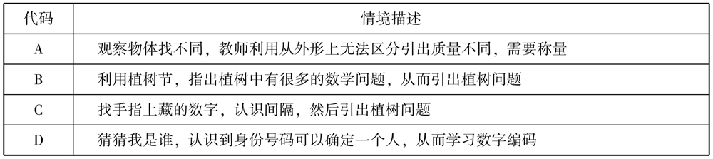
2．教学新授内容扎根教材
每节课的教学内容都以教材提供的例题为基础，以单独的例题教学或者整合多个例题的方式教学，围绕教材的出发点，教学中注重实验、体会、运用。在知识层面注重概念教学、注重结论的总结和运用。具体情况概括如表6.2所示。
表6.2 教学内容总括
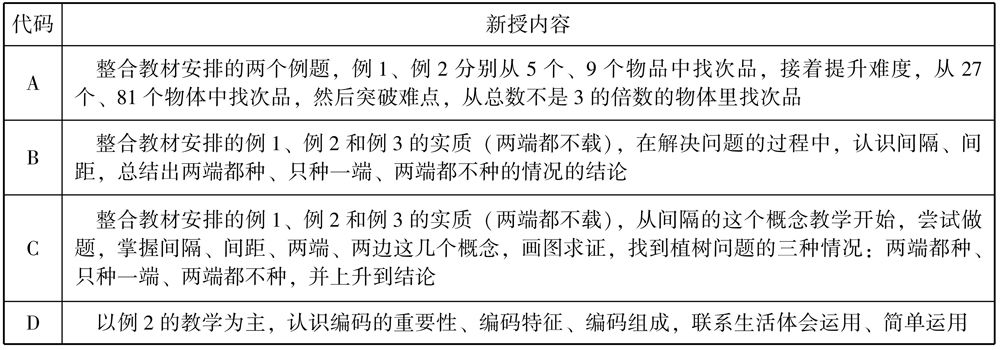
从表6.2可以看出，每一节课的知识容量都较大，对教师是一个很大的挑战。课B和课C都是植树问题，这两节课的两位教师想要达到的教学内容差别不大，但是她们的教学目标不同，教学采用的活动、组织方式不同，时间分配不同，所以在观看中就会发现：这两位教师各有侧重，课A重视结论和结论的运用；课C重视思想方法。从上一节课的结构分析中也可看出课C用于探索的时间较多，课B用于练习的时间较多。在4节课的教学内容中，都没有涉及教授记忆策略，只有课C中提到记忆的方法。
3．练习内容较合适
这4节课在学习完新课之后，都安排了练习，练习的形式、练习的量、练习的时间都各有不同。在练习的内容上，这4节课都围绕新课选取合适的练习，难度逐渐增大，课A把教学中不是3的倍数的物体的称量（5、6、7、8个物体）作为练习；课B的练习与生活紧密联系，选取了手指上的植树问题、某学校课外活动举行的多米诺骨牌比赛、挂在教室里的千纸鹤、校门前的安全柱；课C的练习包括3个判断题，1个安路灯，1个锯木头，但是锯木头由于时间不够而留到了课后；课D的练习比较有趣，通过充满悬疑的情境和现实生活中的需求进行练习，对学生的挑战性更高，需要学生综合运用所学知识，第一个练习是“破案”，第二个练习是“给住户编门牌号”。可见在练习内容上，这4节课都根据各自的课型选择了相应的联系，有的与生活密切练习，有的来源于书本，有的生动有趣，都围绕教学中新教授的内容，起到巩固知识和运用知识方法的作用。在练习的量上，课A有1个，课B有4个，课C有4个，课D有2个，在练习数量上课A最少。在练习的环节上，4节课都较集中，都在课的后半部分。练习的时间：课A为11分钟，课B为13分钟，课C为7分钟，课D为10分钟。在练习的形式上，主要是小组合作和个人学习。从上面的分析中得出：课A的每一个练习所占的时间都较长，课C所占的时间较短。
1．师生语言比例
师生语言比例在一定程度上体现了讲授和学生角色的情况。在观看录像和转录的过程中，研究者的感受是教师比学生说得多，而且学生很多时候的话语没有实质内容，仅是对教师提问的反馈，比如：“师：你们同意他的说法吗？生齐答：同意。”而且在前面的分析中也得出：4节课均以全班的公共活动为主，而公共活动则主要是借助教师的讲解、提问，学生的回答。那么为了进一步对师生的话语情况进行研究，对4节课的师生话语，从话语总字数、它们的比例、说话的次数、话语长短等方面进行了统计分析。
在录像已经转录成文字的基础上，保证了统计分析的顺利完成，且在这4节课中师生话语可以分成四类方式：
（1）教师单独说；
（2）学生单独说；
（3）学生齐声说或多个学生一起说；
（4）师生齐说（主要是教师引导学生将他们理解模糊或者是表达不清楚的内容说出来。以教师说为主，学生跟着说，这样的内容在课中占的比例较少）。
在这项研究中，教师话语量包括（1）和（4），学生话语量包括（2）、（3）和（4）。同时说明在这些统计的话语内，不包括同桌交流或者是小组讨论活动时的话语，因为这些话语通过观看录像无法听清楚，从而无法转录。具体情况如表6.3所示。
表6.3 4节课中的师生话语统计分析结果
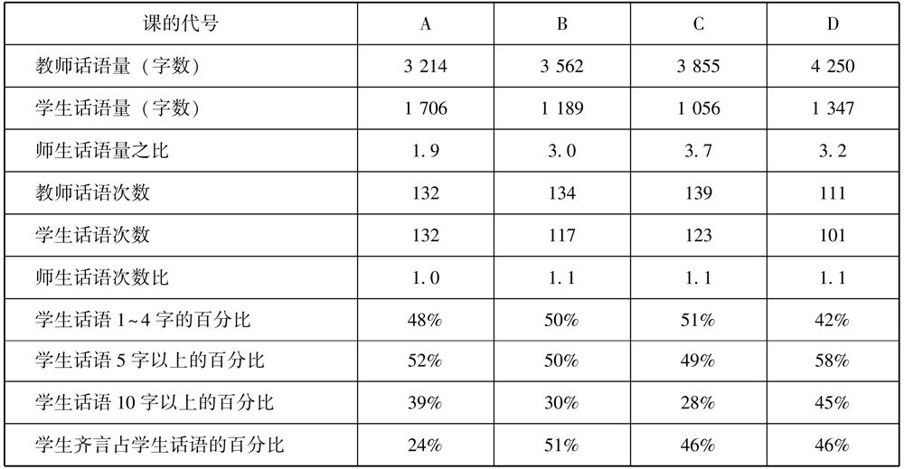
统计的结果符合观看录像时的直观感受——教师说得多，学生说得少的情况。师生话语量的悬殊，最大的达到3.7，最小的是1.9。在话语量方面有突出特点的是A课（第九届），教师的话语量明显少于其他课，学生的话语量明显多于其他课，师生话语的比例也比其他课小。而且从这些课中可以看出没有因为是不同年的课而出现差别，即话语量没有因为是在不同年级的课上而呈现出规律性的不同。
在话语的次数方面师生相差不大，比例都较均匀，都在1.1左右。从这样的情况可以看出：当话语量固定了，话语机会相当，话语量大的，则话语的长度就长；反之，话语量小的，话语的长度就短。这样就可以推断出：教师的话语都比较长，而学生的话语都比较的短。统计结果也表明：除了课D，学生话语1至4个字以内的情况几乎都占学生总话语的一半以上，即学生有一半的发言的字数都在4个字以内。而四个字的一句话能表达多少意思呢？或者是，还有一半的话去哪里了？这种时候往往被教师说掉了一半，学生补一半，即可以反映出：有些时候，学生的表达不完整。而10个字以内的话语占三分之一左右。此外，除了课A，其余课的学生齐说的话语也接近学生总话语的一半。
从表6.3的统计数据中可以归纳出在教学中师生语言的三个特征：
（1）学生话语量明显少于教师话语量。教师话语量集中在3 000～4 300字，而大多数课的学生话语量集中在1 000～1 700字。所以整体而言，4节课都存在教师说得多，学生说得少的情况。下面是课C上到28分钟时的一个片段。
课C片段：
T：你们能听明白他们的话吗？
S：能。
T：同学们特别棒，刚才这几位同学的汇报中用到了咱们数学上的推理方法，这种方法在以后我们学习的过程中还会经常被用到。好了，同学们看，数学家门总结出来的这些规律，我们同学通过自己的探索也能发现，你们有成就感吗？
S：有。
T：同学们真棒！在三种情况下，你们厘清了棵树跟间隔数的关系了吗？
S：清楚。
T：还有没有什么问题？
S：没有。
T：真的没有问题？
S：没有。
T：耳听为虚，眼见为实，咱们来检验一下。请看，判断下面的话，对的打钩，错的打叉。第一题，有结论的把手举起来。说错的，请说说理由，请你说。
S：因为间隔数比棵树多一，所以除以它的间隔数，还要再加一。
T：同意吗？
S：同意。
课C中的这一个教学片段，从教师话语量和学生话语量来看，教师话语量明显偏多，学生的话语很少体现出学生的思考，似乎学生说话的目的是集中注意力。
（2）师生话语机会几乎相等，学生话语长度1～4字的情况所占比重较大。从表6.3中的数据对比看出，教师话语机会稍多于学生话语机会，但是在话语的长度上，就有很大的差距，学生话语长度1～4个字的情况几乎占总话语的一半，而多余10个字的话语在三分之一左右，相比5年前的课，有所增长。下面是课C开头的一个片段。
课C片段：
T：怎么样画便于研究呢？同学们都商量商量，看有什么办法（留了半分钟）。有主意了吗？（看到有同学举手）谁来说说，想到什么办法了？听你说。
S14：就是要找到植树的规律。
T：找到规律，那你觉得要画这么多吗？
S14：不用，只用先画几棵。
T：你们觉得这个主意行不行？
S：行。
T：你们很聪明，想到了把复杂的问题简单化，那咱们就像这位同学说的，我们少画几棵树试一下，可以吗？
生：可以。
T：请看，咱们这里有活动要求（PPT出示要求）。一起读一读吧，活动要求，起。
S：“（1）联系生活情景，先想办法独立研究在两端都栽的情况下，棵树与间隔数的关系。
（2）有困难的同学可以画一画、摆一摆，也可以请小组内的同学帮忙解决。
（3）完成后在小组内说一说你的想法。”
T：能理解要求吗？
S：能。
T：接下来的时间啊，老师就准备交给你们自己来研究，行吗？
S：行。
T：好，你们自己先试着研究一下，等会儿我们再来交流，看看你们都有什么发现。先试试，你们少画几棵树来研究一下。（留了2分钟10秒）
T：同学们有发现了吗？把你的发现和同学们交流一下。（1分钟）
T：有什么发现吗？
S：有。
T：我们不能只顾着研究啊，我们还需看一下自己的发现，并与大家一起发现、一起交流。有哪个同学愿意把自己的研究成果展示给大家看？你的，还有谁的？哦，这位同学的。这样，请用不同方法研究的同学来讲解一下。同学们啊，老师有一个温馨提示，真正的数学学习一定要学会倾听，也就能学会别人的发现，OK？
S：OK。
T：好，咱们来看这几位同学是怎么研究的。来，给大家说说你是怎么研究的［在投影仪下展示，相应的同学在台上用话筒解释］。
以上是课C的一个片段，仅十几句话，学生回答中最多的是“行，能，可以，有”，而学生说得最长的一句话是读教师在PPT上呈现的要求，在其他的地方还有读题目。所以学生很多的回答只是对教师要做什么的一个反馈，教师的很多问题不是要求学生思考、解释、运用。在超过10个字的话语中，有部分是读题、读要求，是重复总结的结论，体现学生思维过程的话语很少，学生主动发问的话语几乎是零。
（3）在课上齐言的现象总是很明显。课A除外，其余三节课都占话语比例的一半。下面是课B的一个片段。
课B片段：
T：好，我把它写下来。其他同学和他的一样吗？
S：一样。
T：好，掌声。咱们的同学可真善于思考，通过摆一摆、画一画就发现了植树问题有三种情况，请问是哪三种情况？
S：两端都栽，只栽一端，两端都不栽。
T：我们还发现了它们的规律。两端都栽？［教师一边指，学生一边说］
S：棵树＝段数加一。
T：只栽一端？
S：棵树等于段数。
T：两端都不栽？
S：棵树等于段数减一。
T：现在再请同学们来研究，同学们一开始就要研究的这个问题，有几种情况？
S：三种。
T：好，请你们选择其中的一种，在练习纸上算一算。
这是课B从22分28秒到23分31秒的一个片段，非常明显的教师问、全班齐答的形式。这种情况往往出现在有小结和做练习且学生无法回答的时候，大多教师不是通过让单独的学生回答的方式，而是生硬地通过手势、眼神等方式指导学生将他总结在黑板或者PPT上的结论读出来。也许是因为一节课的时间有限，老师为了展示完整课程的设计，而忽略了学生真正的理解。
2．公共活动与个人学习、小组学习
研究者把课堂互动划分为三种类型：完全的公共互动；完全的非公共活动；混合的互动。本研究根据所观的课体现出来的情况，对此划分进行了调整，主要把课堂活动分为三类：
（1）公共活动，指面向全班学生的教学活动，具体包括教师的讲解、提问与回答、布置任务、讲解要求、板书、学生展示等。
（2）个人活动，指在课堂上一个人完成的活动，包括自己阅读教科书、自己读题、自己做练习等。
（3）小组合作，指在小组内展开学习，包括同桌交流、小组讨论等。此部分将从各活动的时间和种类上进行统计，具体情况如表6.4所示。
表6.4 公共活动与个人、小组活动所占教学时间比例
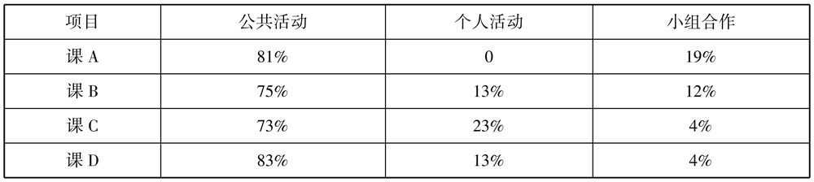
由表6.4可见，公共活动时间远远多于小组合作与个人活动时间，其中公共活动占各自教学时间的70%以上，几乎达到四分之三。就是说，每节课的大部分时间都用于共同学习、交流。以下是对公共活动、个人活动、小组合作的细分和说明。
1）师生互动情况
观察教师和学生的直接互动与间接互动，以及学生之间在课堂上讨论和互动的情况。其主要是通过记录在课堂教学中每种互动行为出现的次数，计算每一种类型的总数和每一种类型在总数中所占的百分比。主要从以下几个方面观察记录：
（1）接纳学生的感受：指教师接受或承认学生表达的感受或以一种平和的方式关注他们的感受，体现教师对学生的尊重。如：“我知道大家可能有些困难，所以让我们继续努力吧。”
（2）赞扬与鼓励：教师对学生的表现做出积极的评价与反馈。如：“你的这种想法太棒了！”
（3）接受或运用学生的观点：教师提到、同意、澄清或者是拓展某个学生的观点，不带评价。如：“黎明说两端都不植的时候，棵树等于间隔数。”
（4）提问题：教师询问信息，或者是追问某个学生答案中的观点。如“想想，你能提出一个什么样的问题？”
（5）讲授：教师展示想法、信息或者表示某种导向，说清楚原理，可以包括讲解、总结等。
（6）给予指导：教师以一种希望学生遵从的方式给予学生指导或建议。如：“把书打开到53页。”
（7）批评或者证明自己的权威：教师对学生的表现做出消极的判断或提及教师的权威地位。如“你昨天怎么忘记记日记，要知道这是我们的常规工作。”
（8）学生的口头回答：学生直接用语言对老师的问题做出反应，或者是做出深层次的回答。
（9）学生发起的谈话：即学生对某一个内容有不同的问题或者见解而出现的出乎预料的讨论、评价或者提问。如：“我同意刚刚这个同学的回答，但是我还有其他的看法，我认为……”
按照以上的分类，根据录像课中的情况，记录每一类互动发生的次数，具体记录如表6.5所示。
表6.5 师生互动类型情况记录
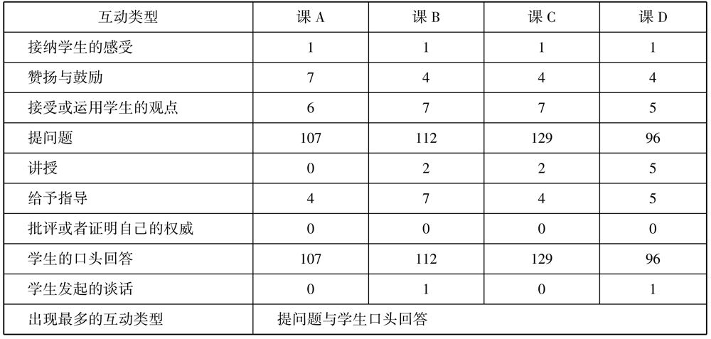
从表6.5可以看出，在师生互动情况中，教师的提问和学生的口头回答是师生互动的主体活动。课A，107次师生问答；课B，112次；课C，129次；课D，96次。在这4节课中没有出现批评或者是证明自己权威的情况，体现教师尊重学生的人格权利，是比较和谐的课堂。讲授的情况基本符合从课的结构中观察到的情况，教师直接讲授次数较少，课A为0次，其余课教师教授最多不超过5次。指导一般出现在做练习的，这个情况与练习量相匹配，次数在4～7次。当学生出现困难或者有其他情绪的时候，教师能够接受学生的感受，课堂上出现这样的情况也较少，几乎每一节课有一次接纳学生感受的情况。运用学生的观点的互动情况比较均衡，每一节课都是5～7次，教师很注重学生发言的观点，并且通过自己的赞同而让学生产生一种“发现的感觉”。关于学生发起的谈话，这样的互动能反映出学生的思考与疑惑，同时能够体现学生的批判精神，但是这一互动在课堂中非常少见，一般这种情况很少是教师上课之前预设的，大多是课堂生成的，只有学生深入的理解和思考之后才会出现，在这4节课中，课A是0次，课B是1次，还是教师促成的，课堂实录片段如下：
T：来，来，来，我听到有不同的声音，你先说。
S：一只千纸鹤，应该两端都要有才对，所以我们应该采用两端都栽的方法。
T：嗯，好，你先坐下。有的同学要说话，你说。
S：我说选一，因为我看图，有一段是一个棍子，没有千纸鹤。
T：你是按照什么判断的？
S：只栽一端。
T：现在明白了吗？你有什么话要对他说吗？
S：下次要看图。
T：记住了吗？好，请坐。
这个片段就是教师发起的一个学生的讨论，知识不是很深入也比较短小。课C是0次，课D是一次。最后是关于教师的表扬的，表扬的次数为4～7次，只有课A为7次，其余课均为4次，这样的次数反映出教师的表扬是理性的而非泛滥的，不过在表扬的形式与语言上有明显的差异。以下是课B的3个表扬片段：
片段1：
T：总长刚好是20米，符合要求，栽6棵可以吗？
S：可以。
T：符合要求，非常棒。
片段2：
T：了不起的孩子，画线段图是帮着我们解决问题的好办法，咱们来看一看他的线段图画得怎么样。
片段3：
T：好，我把它写下来。其他同学和他的一样吗？
S：一样。
T：好，掌声。咱们同学可真善于思考，通过摆一摆、画一画就发现了植树问题有三种情况，是哪三种情况？
以上的三个教学片段，都是对学生个体的表扬，教师主要用了非常棒、了不起的孩子、真善于思考这三个表扬的词语，并且说清楚了表扬的原因。从表扬的语言和形式上看都很多样，能够起到表扬的作用。
2）个人活动
4节课大部分的时间都用在了教师与学生之间的问答活动上，也就是教师与学生个人，教师与全班的互动中，个人活动占的时间较少。这里统计的个人活动主要包括个人的阅读、解题、思考、练习等内容。表6.6从时间的角度对个人活动的情况进行了统计。
表6.6 4节课中的个人学习情况
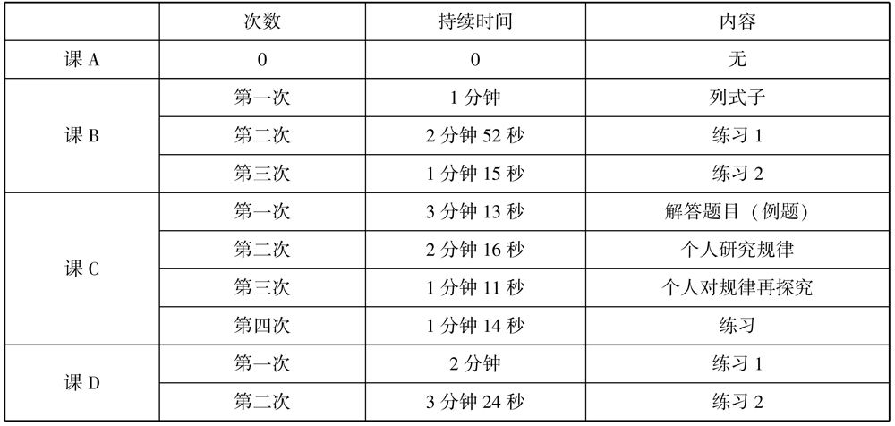
从表6.6可见，课A的个人学习的次数为0，课B的次数是3次，课C的次数是4次，课D的次数是2次。相比之下，课B与课C的个人学习的次数比课A、课D的次数多。从个人学习的的时间看，课C用于个人学习的时间比较多，接近8分钟，课B与课D用于个人学习的总时间均为5分多钟，从每次个人学习的时间量看，所留时间比较适中，最短的有1分钟，最长的有3分钟。
从个人学习活动出现的时机看，主要是在解答题目、列式、做练习、探究规律的时候。其目的主要是进一步学习和巩固已经学到的内容。课C的个人学习意图主要是对规律的探讨，课D主要是对知识的综合运用，这一点从课C与课D中选取的教学片段可以表明。
课C片段：
T：请看，咱们这里有活动要求（PPT出示要求）。一起读一读吧，活动要求，起。
S：“（1）联系生活情景，先想办法独立研究在两端都栽的情况下，棵树与间隔数的关系。
（2）有困难的同学可以画一画、摆一摆，也可以请小组内的同学帮忙解决。
（3）完成后在小组内说一说你的想法。”
T：能理解要求吗？
S：能。
T：接下来的时间啊，老师就准备交给你们自己来研究，行吗？
S：行。
T：好，你们自己先试着研究一下，等会儿我们再来交流，看看你们都有什么发现。先试试，你们少画几棵树来研究一下。（留了2分钟10秒）
T：同学们有发现了吗？把你的发现和同学们交流一下。（1分钟）
T：好，咱们来看这几位同学是怎么研究的。来，给大家说说你是怎么研究的（在投影仪下展示，相应的同学在台上用话筒解释）。
S：先假设那一段是1 000，然后分成三棵树。
T：那有几个间隔？
S：两个。
T：同学们看看，你再数数，数给同学们看看。
S：间隔是一个，间隔是一个，一共是两个。
T：哦，有两个间隔，然后呢，有几棵树呢？
课D片段：
T：那我们就来编一编（PPT出示4栋楼的和平小区）。王老师家搬进了新建设好的和平小区，和平小区的工作人员想为小区的每一位住户编一个号码，我们来看一下编码的一些具体要求（PPT上出现要求）。请一个同学读一下。
S：和平小区有4栋大楼。每栋大楼有6个单元，12层，每层2户。王老师家住在5单元7层2号，请以王老师家为例编号。
T：听清要求了吗？
S：听清了。
T：开始编吧，把你的预习提纲翻过来，在它的背面写下这个编码方案就可以了。
T：都编完了吗？现在我选取了同学们的几种编码方案，咱们一起来看一下（板书572；5072；45072），好，第一个编码当中的数字都代表什么含义，谁来猜一猜？
S：5代表单元，7代表层数，2代表住在2号。
T：很好，请坐。
T：谁来说一说第二个编码是怎么编的？
S：我的意思也是和他的一样，也是5单元7层2号。
T：那这为何多了一个零，能解释一下吗？
S：因为有12层，如果加一个零就知道是7层。
T：这起到了什么作用？
课C的片段，是新授课里的一个片段，主要的目的就是学生通过自学，探究规律，展示、交流自己的学习结果，产生思维的碰撞、澄清一些错误的想法。在课D的片段中，个人学习的目的在于对新学知识的运用，增进学生对编码特点的理解。
2）小组合作
小组合作在每一节课中都多次出现，但是小组合作的形式较少，在一些书里，分组的形式主要有：按兴趣分组、按能力分组、按任务分组、就近分组。具体情况如表6.7所示。
表6.7 4节课中的小组合作学习情况
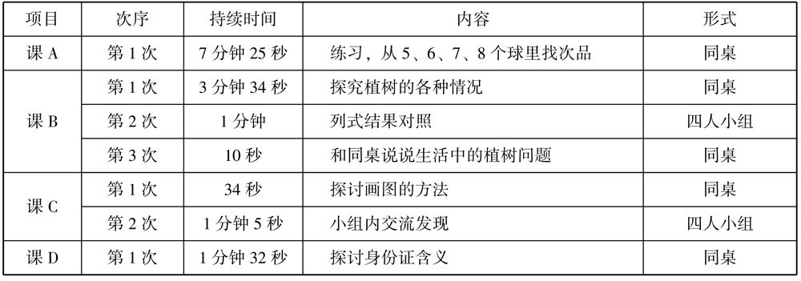
从表6.7可见，小组合作学习在课A与课D中出现的次数都是1次。课B中3次，课C中2次。课A持续的时间较长，长达7分钟，其余课比较短，课B的第三次小组合作仅有10秒钟。
从小组合作的形式上看，主要是同桌或者四人小组合作。同桌或者四人小组的方式可以归为按就近分组的原则，而在分组的过程中没有出现能力同质分组、兴趣分组、按照共同任务分组的情况。
3．多元智能开发策略体现
人们最初对智能的认识是一元的，对智能的定义也是操作性的。与之相对立的霍华德·加德纳提出了智能的多元观（Pluralistic View of Mind），承认智力存在许多不同的、各自独立的认知方式，承认不同的人具有不同的认知强项（Cognitive Strengths）和对应的认知风格（Cognitive Style）。霍华德·加德纳的多元智力理论已得到广泛的运用，比如写作关于数字智能的书籍，用多元智能论证开设一些专业学校的必要性。教育学家也运用多元智能提出了各种教育改革的方案，教学的设计、教学方法的研究等方方面面都有多元智能的踪影，在美国甚至创建了以多元智能应用的学校。
霍华德·加德纳在他的书中多次提到：有史以来的绝大多数学校，都是统一制式学校。教师用同样的方法教授所有的学生，而所有的学生也学习同样的内容，对学生的评估方式也是统一的，但是这种学校的学习方式是不公平的，只对语言能力强和逻辑数学能力强的人有利。因此，他提倡以个人为中心的教育，要求教育者认真对待学生的差异，尽可能地利用这些信息，为每一个孩子创造出最理想的教育环境。在主要是大班教学的环境下怎么样实现个性化教育呢？现在我们的课堂中能否兼顾各种智能设计教学是这节探索的问题。
根据霍华德·加德纳的多元智能理论，人的八大智力不是固定不变的，都是可教的、可学的。有研究表明：在进行某些学习活动的时候，某些脑区激活会比较明显，但是没有直接的证据证明这些脑区和特定的智力有直接的联系。所以对教育者来说，给孩子提供更多锻炼各种智力的机会是最好的策略；同时，人的能力会因遗传在后天学习的过程中有某些明显的智力优势，因此提供多种智力的训练也可以有利于各种智力优势的孩子学习，而不仅仅有利于语言能力和逻辑数学能力较强的孩子。根据以下的多元智力表，把课的代码直接标注在涉及的项目内，4节课的统计结果如表6.8所示。
表6.8 4节课多元智力教学策略检查
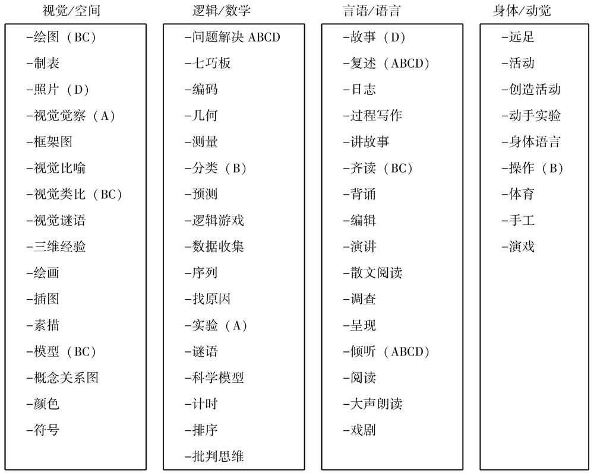
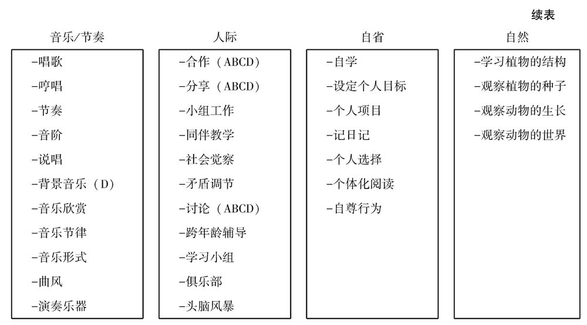
从表6.8可知，视觉/空间、逻辑/数学、言语/语言、人际这4个方面体现的智能比较多，而身体/动觉、音乐/节奏、自省则体现的很少，只有B和D两节课涉及了其中很小的两项，自然这一大智能则没有体现。研究每节课的设计、教学所涉及的内容和体现的智能情况不是为了说明课的好坏，也不能够用来评价课的好坏，因为这八大智能不是仅通过数学课发展的，在其他的课上，同样能为智能的发展提供可能性，还有学生的日常生活、人际交往，在家、在公共场所与人、事、物体的相互作用，目的是对教师教学设计与教学中关于八大智能思考和运用的了解，同时从侧面反映现在的数学课主要有利于哪些智能的发展。
从表6.8可以看出，课A的教学运用了视觉/空间、逻辑/数学、言语/语言、人际智能，其中在逻辑/数学和言语/语言智能中涉及的情况最多。课B运用了视觉/空间、逻辑/数学、言语/语言、身体/动觉、人际智能，其中涉及最多的是视觉/空间、逻辑/数学、言语/语言、人际智能。课C运用了视觉/空间、逻辑/数学、言语/语言、人际智能，其中运用较多的是视觉/空间、逻辑/数学、言语/语言、人际智能。课D运用了视觉/空间、逻辑/数学、言语/语言、音乐/节奏、人际智能，其中运用较多的是逻辑/数学、言语/语言、人际智能。通过对比，这4节课共同体现的是视觉/空间、逻辑/数学、言语/语言和人际智能。不过从体现情况看，逻辑/数学和言语/语言智能比较多，而且就观看的情况而言，各课涉及的智能除了量的区别外，还存在质的差异。
总之，统计结果从侧面反映出课B活动比较多样，各活动环节更替频繁，这与课的结构中反映的情况相符合。在数学广角教学中大多重视发展学生的以下四大智能，以逻辑/数学、言语/语言智能为主，人际、视觉/空间智能次之。
1．提问技巧
课堂提问既是课堂走向的导向方式，也是启发学生思维的方式。要做到提问效果好，则需要教师拥有高超的教学艺术，对学生的思维足够了解；而得当的多媒体运用，使教学的内容变得更为直观、具体，节省教师的时间。观看我国现阶段的课间提问方式，大多数都是问答式的，即主要是通过教师问、学生答的方式，其中设计的小组、个人活动等，主要也是以问答的方式来完成的，或者是服务于教师问题的；教师的表扬、鼓励等语言，也是对学生所回答的问题的一个态度体现。因此研究一堂课中教师所提出的问题，观察教师提问的能力和有效性，在很大程度上可以体现出一节课中学生思维发展的情况。
在一堂课中，不是所有的问题都可以明确界定，问题的类型受到情境、音调变化、问句结构等的影响。在本部分，将要研究的问题鉴定为：任何口头的说法或者手势只要能引起学生的回应或回答，就被看作问题；如果这种回答能够让学生积极参与学习过程，那么这个问题就是有效问题 [2] 。在观课、转录的过程中，发现这4节课都是教师频繁地提问，学生提问几乎为零，只有在课D中，通过教师问学生产生的问题，学生提出过两个数学问题，学生的思考几乎都是在教师的提问中产生的，学生基本没有主动思考。而且大部分的问题都不是高认知水平的问题，都不需要学生认真思考，有部分似乎是为了不让学生注意力分散而提出的，即不用思考的问题和管理性的提问居多。比如：“T：你们也是这样做的吗？S：是的。T：你能给我们解释一下为什么会这样吗？S：可以……”
有很多的方法都可以用来检测教师提出的问题，本研究主要采用了诺里斯·桑德斯在布鲁姆的认知分类理论的基础上提出的一种方法，该方法提出了7种类型的问题，从简单到复杂排列为：
（1）记忆：学生回忆或再认信息，关键词：定义、描述、识别等。
（2）翻译（迁移）：学生把信息转化成不同的形式或不同的语言，关键词：转述、重新组织等。
（3）解释：学生发现事实、公理、定义、价值以及技能之间的关系，关键词：解说、归纳等。
（4）应用：学生先是识别问题，然后选择并运用合适的公理或技能来解决现实问题，关键词：应用、使用。
（5）分析：学生有意识地运用相关知识以及某种思维方式来解决问题，关键词：联系、分辨、区别。
（6）综合：学生通过创造性思维来解决问题，关键词：组织、创造。
（7）评价：学生根据自己的标准评判好坏、对错，关键词：评判、断定、说明 [3] 。
其中，翻译和解释是理解的两个水平，为了帮助观察者更好地区分每一个问题的合适类型，作者提供了一张参考表格。研究者根据表6.9和布鲁姆的认知领域中所提供的动词（解释、描述、评价、记忆等），结合转录好的教师问题，一个一个地确定教师所提问题的水平。问题水平的判断举例如表6.9所示。
表6.9 问题水平的判断举例
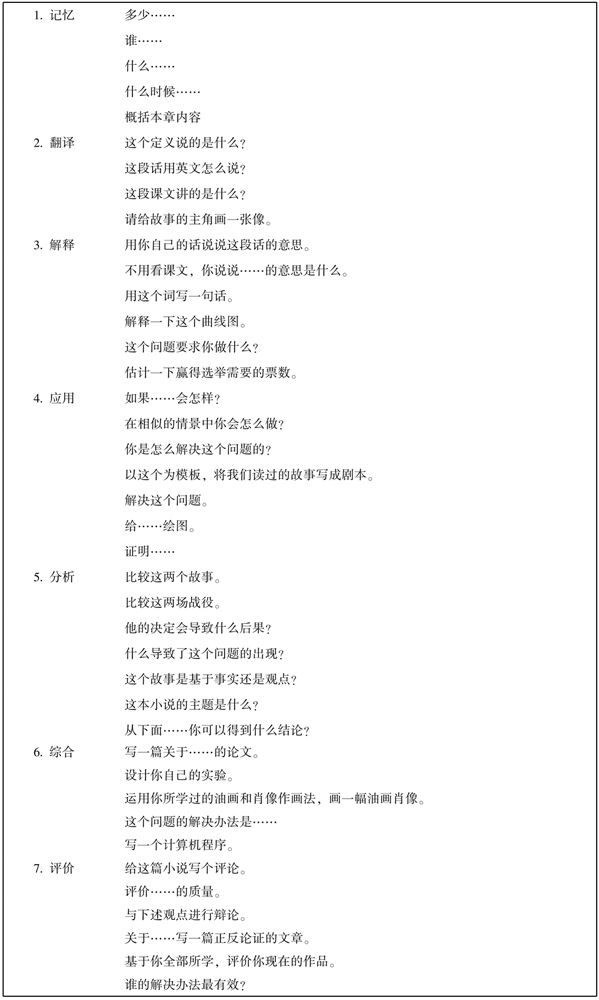
表6.9中所举的例子不是专门针对数学课提出的，它涉及数学、文学、艺术等，但是它们都非常清楚地从各个角度再一次讲明各个层次的问题的特点，对问题的研究具有非常大的启发。由于在统计问题的过程中存在一些有共同特征，但是不能归到这7类问题中，这一类问题和数学教学的内容无关，通常是用组织教学获得简单反馈的，因此在统计中增加了一类问题，叫作“管理性”的提问，即教师为了组织教学，集中学生的注意力，或者是了解大多数学生掌握情况而提的问题，是和数学教学内容无关的问题（比如：“T：你们也是这样做的吗？S：是的。”“理解了吗？”“其他同学，你们是不是也是这样做的？”“有不同意的吗？”），研究者将这类问题放到了“记忆”的前面，且标记为“1”，其余的7类问题都相继下移。对于连续提问、不需要回答的问题，不做统计。教师提问情况的具体统计如表6.10所示。
表6.10 教师所提问题水平统计
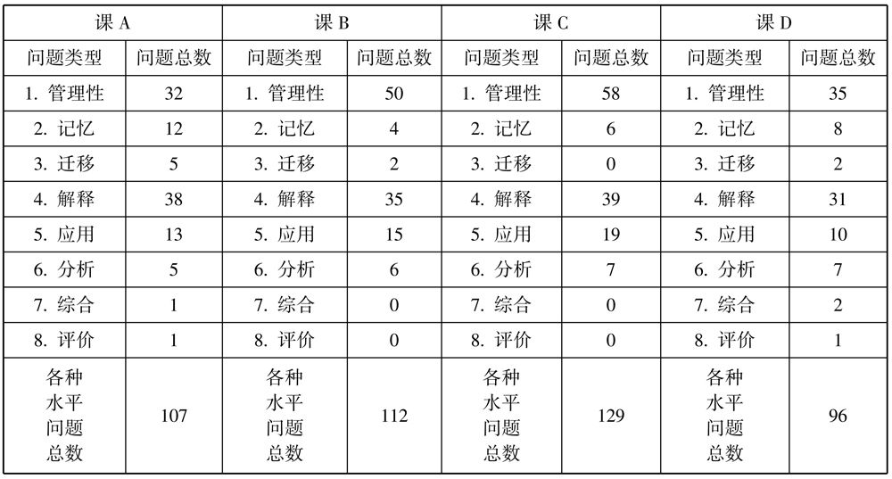
有一种实用的问题分类方法，可以把问题分成：事实型问题，如铅的沸点是多少？；见仁见智的问题，如你喜欢什么发型？；判断型问题，如拯救地球的最好办法是什么？。由于问题类型不好界定，因此在做的过程中更多的是一种价值的判断。所以以上的归类结果有一定的不科学性，会受研究者的主观判断影响，但是这样的分类还是可以反映教学中存在的一些问题的。
很多教育学家都对教师的提问做出过研究，包括布鲁姆和桑德斯，在他们的研究中都曾经指出教师经常提问的都是一些低水平的问题，主要是记忆、迁移和解释，而高水平的提问（应用、分析、综合、评价）不多。表6.10的统计结果，也反映出类似的情况：
首先，提问比较频繁。从表6.10中看出，4节课的提问次数为96～129，每节课平均每分钟最少提问2次，可见教师发问非常频繁。在观看4节课的过程中发现，除了课D中教师问学生有什么问题，学生提出过两次问题外，再没有看到学生发问。由此可以看出，学生的思维都是在教师的提问下引发的，学生没有主动思考、发问，而且从发问的频繁情况也可以推断出，每一个问题的作答时间是比较少的，这也可以从侧面反映出问题水平的情况和发问之后预留时间思考的情况。
其次，管理性问题较多。在表6.10中可明显看到管理性问题的数量为32～58。这类问题与教学的内容没有直接的关系，是组织课堂教学的一种重要方式，它们可以集中学生的注意力，获得一定的反馈，有利于课的进行，尤其是在大班教学下，这类问题是不可或缺的。不过这类问题太过频繁，占用了课堂的不少时间，甚至是打乱了学生的思维，学生的思维将一直停留在教师问、学生简单反馈（齐答）、不用思考的状况，从而降低了一节课的教学水平。尤其是在课B与课C中，管理性问题几乎占了总问题的一半，即两个问题中就有一个管理性的问题，这样的情况会直接导致课堂教学的思维含量不高、课堂教学烦琐等问题。学生被一个一个问题推着走，但是却没有一个整体的认识、没有一个明确的目的、没有一个思考的中心点，缺少思考，难以形成良好的思维习惯，以至于获得的是一些生硬的知识片段。
最后，高层次性问题少，低层次性问题占大多数。记忆、翻译（迁移）、解释、应用类问题的数量远远多于分析、综合与评价类的问题数量。在课B和课C中，综合与评价类问题没有出现，课A与课D也仅出现过两三次。而且观课中，对这几个问题的回答质量不高，教师完全没有留足时间，学生似乎也没有深入思考的习惯。从中看出，学生更倾向于对低层次的问题做答，高层次的问题也当作低层次问题回答，因为教师的要求也仅仅是让学生能够答出他想要的答案，能够让他的课沿着他的设计顺利进行。学生在回答低层次问题时，遇到的困难不大，而在分析运用中遇到困难时，老师会通过口头提醒、手指示板书等方式帮助学生快速回答，然后让学生重复一次。这样的方式在一定程度上加快了教学的进度和增大了课的容量，似乎有助于学生的记忆和理解，但是却缺少学生思考和修正自己思考的过程。
根据教学内容和已有研究，数学广角的教学内容，属于事实、规则、动作的较少，主要是一些概念、模式和抽象理论。而针对后面三种教学内容，提出分析、综合和评价问题的教学效果会更好，更利于培养学生的思维能力和创新能力。这类问题最好在提问之后，给学生留足15秒的思考时间。但是在实际的课堂中，提出的较高层次的问题，没有切实地引起学生深入的思考，使得课堂都在简单问答或者教师急切地引导学生说出问题答案的过程中进行。
2．教学媒体的运用
教学媒体是媒体的一个派生概念。当媒体被用于教学场景，承载、传递和控制以教学为目的的信息，并介入教与学过程之中的时候，就称为教学媒体（Instructional Media） [4] 。比如印刷的练习、课本、黑板、实物、模型是传统教学媒体，电光媒体、电声媒体、电视媒体、计算机媒体、综合媒体是现代教学媒体。
通过观看录像课，发现4节课的教师都把传统媒体与现代媒体相结合以促进学生的学习，这很好地提高了教学效率，增强了教学的有趣性，吸引了学生的注意力。在传统媒体方面，教师主要用了打印的练习纸、板书、模型，4节课都准备有练习纸，都有一定的板书，能够简练地概括整节课的思路及重难点，课B准备了有助于教学的模型。在现代教学媒体方面，教师主要使用了多媒体和投影仪，有机地将文字、图片、图像和声音相结合，主要用图文出示活动要求、例题和情境、练习，用动画的形式演示实验的过程，用声音和图片创造故事情境，用投影仪展示学生的练习情况。只有课A使用实验演示和课D使用图片和声音相结合的教学方式，其余两节课都只用到图文展示的方法。
总之，教师实施的教学设计、使用的信息技术能很好地促进学生学习。教师在运动信息技术时应注意社会伦理、法律以及人性问题，并在实践中妥善处理。
教师在利用学生的思想和力量方面做得较好，比较擅长运用学生的想法；教师或者其他学生重述这些想法；将学生的想法与数学知识直接进行联系，鼓励学生投入学习过程；用个别的学生或者集体对教学内容进行概述、回顾与小结。
为了了解教师平时的教学情况，选定两位教师作为研究的对象，进行常态课的教学案例研究，主要分析他们在课堂上呈现出来的状况、他们对数学广角教学的理念和感想，并针对他们的教学设计进行访谈。通过常态课的个案研究，进一步了解数学广角教学的现状。
介绍教师C的主要背景，记录一节课的课堂实录并分析该课，同时通过访谈了解教师C对数学广角的认识和对该课的设计。
1．教师C的背景资料
教师C是一名男性教师，教龄21年，本科学历；热爱数学教学，深受学生喜爱，得到家长好评；是某小学的骨干教师，也是某市的小学数学学科带头人；他的课堂氛围自由、朴实而深刻，可谓独树一帜。
2．数学广角教学课堂实录
优化第一课时：
一、导入
师：你们吃过烧饵块吗？
生：吃过。
师：怎么烧的？
生：一面一面地烧。
师：你见过的最多的烧几个？
生：4个。
师：一次烤几个受什么限制？
生：锅的大小、时间多少、火的大小以及客人多少。
师：今天就一起学习怎么尽快地吃上烧饵块。打开课本第105页，读图，找出你觉得重要的数学信息（共用时4分钟）。
该教师以烧饵块必须两面都烧来导入，先入为主地让学生感知到了烧饵块中的数学问题，同时激发了学生探讨的欲望，再以“一次烤几个受到什么限制？”的提问让学生明白锅的大小会限制烤饵块的数量。不过教师C在明白锅的大小会限制烧饵块数量的这个地方处理得不是很到位，当学生提出“锅的大小、时间多少、火的大小以及客人多少”等因素都会影响一次烤多少时，教师没有进一步澄清。这里是数学模型与生活实际之间差距的体现，也就是我们抽象出来的用于数学教学的数学情境（锅的大小）中省掉了生活实际（等待人数、锅的大小）中会出现的其他情况，仅是抓住数学教学需要的信息设计教材，因此当教学内空引入生活时，有些需要教师澄清与合理处理。
二、新授
（一）找到主题图中的数学信息，明确关键信息
生：一次只能烙2张饼，每面要3分钟，要给三个人吃。
板书：一次：两张饼；每面：3分钟；人数：3个人。
师：哪个信息最重要？
生：一次2张饼，每面3分钟。
该教师让学生自己从主题图中找到关键的数学信息，并且让学生清楚地将一次只能烙2张饼、每面饼要3分钟这两个重要条件通过重复与板书的方式强化，为下一步学生的探索做好铺垫。
师：好的，那要烙3张饼。你能否模拟呢？
生：用书、用硬币、用手……
师：开始烙饼，看谁的方法最快？（留时间2分钟）
生：9分钟、12分钟、6分钟。
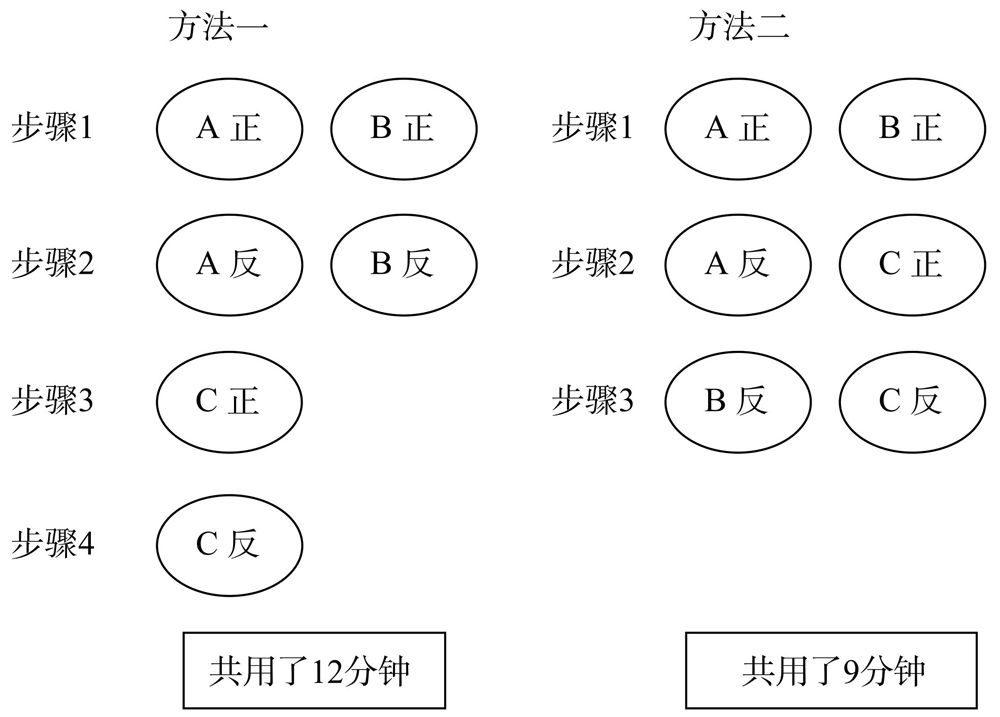
师：把你的方法告诉大家。（该学生说方法，教师C在一边板书记录）
师：方法一与方法二相比，哪个方法省时？省了几分钟？
生：方法二，因为方法一中第三步和第四步时锅中只有1张饼，而方法二中的锅一直是满的，2张饼；省了3分钟。
师：也就是说第二种方法中，锅被充分利用了，没有闲着的时间。
板书：充分利用。
师：现在是4个人吃，同桌再试着模拟一下。
（此处留时间两分钟，在观察学生的过程中发现有部分学生被方法二限制住）
师：现在展示，你怎么想的？（教师板书方法一与方法二）
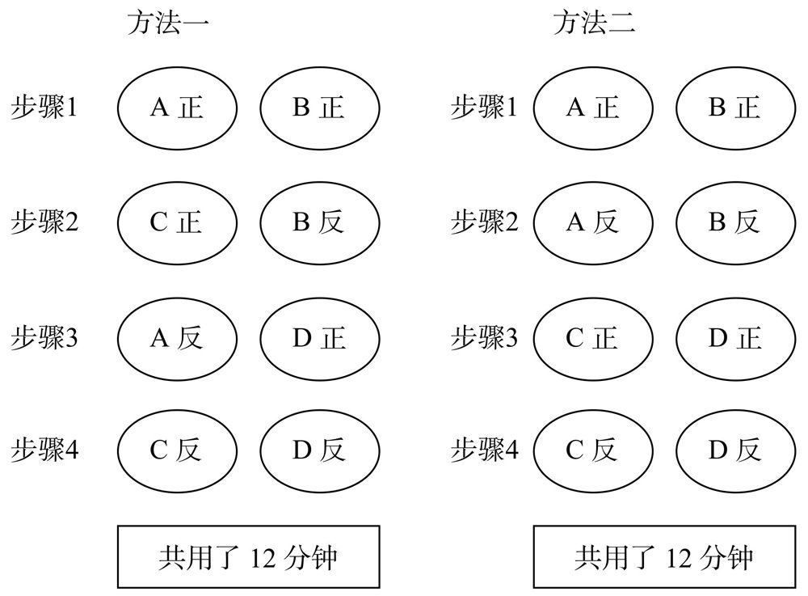
师：都是12分钟，哪个方法更好？
生：方法二，思路更加清晰，不容易错。
师：那烙5张饼呢？
生：A正、B正、A反、C正……（模糊了，叫其他学生）
生：我把烙3张饼时的那两种方法一起用，分成2张饼和3张饼。（老师立刻擦掉方法一中单独烙的C饼，显现出来了学生表达的意思。）
猜一猜烙6张饼？
生：我们都发现规律了，18分钟，用两次方法二就行了。
这是教学的探索阶段，教师没有准备剪好的圆片作为教具，而是让学生用好身边的资源，有的学生用硬币、胶布、书和手等。在这里学生已经通过自己的观察寻找能够作为模拟物的物体，而且重要的是对这些物体进行编号与区分，尤其是用胶布的孩子，他非常清楚要将两面完全一样的区分开来，这样在演示的过程中才不会混乱。探索的过程中教师从烙3张饼到烙5张、6张饼的时候则是要学生猜一猜。在烙3张饼时教师将大家使用的方法一和方法二（此段中的方法二指烙3张饼时的方法二）完整地用图的方式呈现在黑板上，再通过提问让学生观察出第二种方法省时间是因为锅一直是满的，没闲着，这是非常关键、也是非常困难的。接着烙4张饼的时候，也出现了两种方法，有同学因受到方法二的影响，还是用了方法二，这样就把问题复杂化了。到此处我听到有学生悄悄地说出“我发现规律了，奇数的用方法二，偶数的用方法一”，不过老师没有听见，接着往下探究烙5张饼。烙5张饼时，该教师主要是让学生把方法一和方法二结合使用，即烙3张饼用方法二，烙剩余2张饼用方法一。
师：那烙7张、8张、100张时最短用时分别是多少？
生：21分钟、24分钟、300分钟。
师：第n 个呢？
生：3n （教师倒回去板书）。
师：在这里分析下烙2张和1张饼的用时最短是多少（倒回去板书），1张饼满足刚刚的方法吗？此规律只符合饼的数量大于1时。
教师板书（最后成的样子）：
| 1张 | 6分钟 | |
| 2张 | 6分钟 | |
| 3张 | 9分钟 | |
| 4张 | 12分钟 | |
| 5张 | 15分钟 | |
| 7张 | 21分钟 | |
| 8张 | 24分钟 | |
| n | 3n 分钟 |
生：我发现一个规律，如果是单数就用方法二，双数就用方法一。
师：也不一定，如是7张饼，就可以把方法一和方法二结合用，其实就是拆成方法一和方法二。我们在生活中常常用到这种方法，用来提高工作效率。
这部分应该是一个不完全归纳的过程，总结了烙2张饼上升到烙n 张饼时所需要的时间，但是在观察板书的时候老师只是写出了第n 张饼时所用时间是3n， 学生们似乎都明白了只要用饼数乘3就可以得到时间了，可惜的是老师没有让学生说出来“时间每次增加3分钟，饼数就增加1”。但是这个地方该老师高明之处是，问学生烙2张饼和烙1张饼的情况，并说明该结论成立的前提是烙饼的数量大于1张。
板书 优化
生活中用的多，比如沏茶……
师：打开课本第105页做一做第二题。
生（多个）：10分钟、15分钟。
师：怎么算的？
生：首先是爸爸和小明，其实是爸爸和妈妈，最后是小明和妈妈，每盘5分钟，所以就是15分钟。
师：怎么列式？
生：3乘以5。
师：怎么解释？
师：5乘6除以2等于15分钟。
生：还可以5加5加5。
师：这个能解释得通。
由于时间问题，教师没有进行总结，直接让学生完成了练习。在练习中，教师注重学生的思路，重视让学生说，并注重列出正确的式子。
3．针对数学广角教学的访谈
研究者：老师，您怎么看待数学广角的教学？
教师C：数学广角的教学我不强求，我尽量用形象的方法，能理解多少是多少，不过你也看到了班上有大部分孩子喜欢这个内容而且思维发展很好。
研究者：老师，您设计这个课的时候是怎么想的呢？
教师C：我主要是想用学生身边的东西作为教具，降低教具起点，让学生在体验中发展数学思想方法。
研究者：老师，那您认为学生学习优化这个内容时存在的困难是什么呢？
教师C：主要还是对数学重要条件的掌握，尤其是只能烙2张饼、每面要3分钟，所以我就把这些重要的信息都写在了黑板上，刚刚那个被叫上来的小男孩就是在说可以多增加锅或者是换一个大锅，有的学生在联系生活的时候有些困难。
研究者：老师您怎么看待学生学习完这一内容之后的检测？
教师C：一般在期末考试中只有1题或2题，因此一般上完课之后都不太去复习，多半要到六年级才会再去复习，对于期末常考的内容，只会在临近期末的时候有针对性地再讲解一下。不过那些在外面参加思维培训班的学生在这方面表现得相对要好一些。
研究者：老师，刚刚您说到了发展学生的数学思维，您作为一个管理者是怎么看待您所在学校的思维渗透情况的呢？
教师C：数学思维的渗透难度很大，虽然已经研究了好几年，教师们对相关的概念也有所了解了，但是真正尝试做的没有多少，一般都是那些教学名师在做，普通教师还是以考试内容为主，教学中注重基本知识、基本技能。比如说大部分年轻教师，不太敢去尝试；老教师因教学固化，只会用自己的那一套；而我这个年纪的教师有一个教学的高原期，一般也不太愿意去多尝试，所以要真正做到渗透数学思想方法是困难的。
介绍教师D的主要背景，记录三节课的课堂实录并分析，同时通过访谈了解教师D对数学广角的认识和对该课的设计。
1．教师D的背景资料
教师D，教龄20年，女性，本科学历，是某校的年级组长。她上课严谨细腻，在期末考试中，她带的学生的考试成绩总是名列前茅。在该教师的热心帮助下，研究者如愿以偿地听到了植树问题这一教学主题的3节课，这个内容该教师是用5个课时完成的，研究者没有听到第一课时与最后一个课时。
2．数学广角教学课堂实录
第二课时：
黑板上写着例1和例2：
例1：在一条路的一侧每隔4米植一棵树，一共植了6棵树，这条路有多长？
例2：把5棵树等距离地植在长为12米的水渠一侧（两端都栽），每相邻两棵树之间的距离是几米？
一、复习导入
师：（在黑板上画出一个线段图）这个线段图是昨天我们学习过的植树问题中两端都植的情况。
师：什么是间距？
生1：相邻两棵树之间的距离叫作间距。
师：此图中有几个间距？
生2：5个。
师：对的，因为有几个间距，间距数就是几，所以间距的个数就叫作间隔数，而间距是指长度。这里的间距是4米，其实问间隔数就是找有几个“4”。（板书）
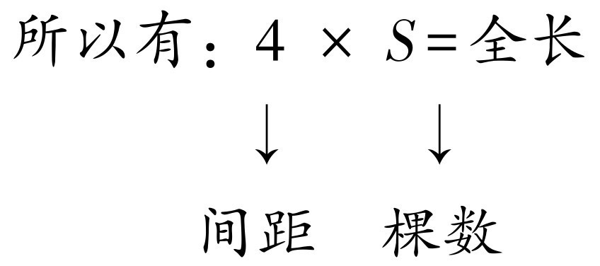
根据一个乘法算式可以写出两个除法算式（学生说教师写）：
全长÷间距＝间隔数
全长÷间隔数＝间距
师：昨天学了一个公式，在两端都植的情况下，间隔数加一等于棵树。大家把这句话说一遍，然后背一遍。
生3：在两端都植的情况下，棵树加一等于间隔数。在两端都植的情况下，棵树加一等于间隔数。
例1和例2不是书上的例题，这一课是该教师在教授课本上提供的例1（两端都栽）之后，为了学习和运用全长÷间距＝间隔数而设计的一课教学。该教师非常重视复习、巩固，重视概念的理解和公式与公式变式的学习，而且将求全长的题目很好地与已有知识“几个几是多少”联系起来，帮助学生理解和记忆。同时，在公式变式的时候直接利用了“一个乘法算式可以写成两个除法算式”。
师：看着黑板上的例1，读题。
师：要求的是什么？题目中哪个是间距？哪个是棵树？我请个同学上来标明。
师：在昨天的课后作业中有部分人不是按照这个要求做的，没有把相关的条件画下来并写明，因此今天重新做。接下来对这个题目列式子，一定要先写出什么（学生一边说，教师一边板书）：
全长＝间距×间隔数
我们不知道间隔数，只知道棵树，因此可以用昨天学习的？
生（齐）：棵树－1＝间隔数
师：所以第一步是求？
生（齐）：间隔数，第二步求出全长。
例1板书如下：全长＝间距×间隔数
棵树－1＝间隔数
第一步：间隔数是几？
6－1＝5（个）
第二步：全长是多少？
4×5＝20（米）
巩固练习：
师：打开课本第118页，做一做，用笔标好间隔、棵树是多少，求全长，把用的公式写出来。按照第一步求间隔数、第二步求全长的格式做，不按照格式的重新做。
师：自己读例2，找出要求什么，标出已知条件是什么。（留时1分钟）
师：例2中最关键的是要找到？
生4：等距离，也就是相邻两棵树之间的距离是相等的，还要找到一侧植树。
师：把解题的步骤写在草稿纸上，一定要记得先写公式，写出第一步、第二步各求什么。
师：现在我们来总结两道题目，例1求全长，例2求间距，都要用到公式“间距×间隔数＝全长”，但是题目都没有告诉我们间隔数是多少，因此首先我们要先用“棵树－1＝间隔数”计算出间隔数。
在运用公式教学例题的过程中，该教师非常注重让学生先在题目给出的信息中找到已知的量是什么，求的是什么，并且要用笔画下来，列式的时候必须先写公式，写出每一步要求的内容。这些公式的运用是非常困难的，教师的严谨要求能够帮助学生保持思路的清醒。而且该教师非常注重及时巩固，进行直接有效的变式训练，促进了学生对公式的理解和运用。
三、巩固练习
师：打开优化第61页，完成第一大题的第四小题，要求同例1、例2，先标出来，找到求什么，写出公式，再分步列式。
师：练习课本第122页第一题。
先让学生猜、说，教师再讲解。
师：一共敲了5下，用了8秒，我们先来看，第一下与第二下之间是不是有一个间距，那么敲了5下有几个间距？
生（齐）：4个。
师：每一个间距用几秒？
生（齐）：用8÷4＝2秒。
师：题目中的要求是敲12下，有多少个间距呢？
生（齐）：11个。
师：那怎么列式呢？我们一起来写。
第一步：间隔数是几？
5－1＝4
第二步：间距是几？
8÷4＝2（秒）
第三步：敲12下的间隔数是几？
12－1＝11（个）
第四步：要用几秒？
11×2＝12（秒）
第三课时：
一、复习导入
在黑板上画能表示两端都植树的线段图，提出问题“你能算出它的全长吗？”然后复习公式：间距×间隔数＝全长，并且将间隔数与以前学过的份数对等，将间距与以前学习过的每份数对等，则有：每份数×份数＝总数，间距×间隔数＝全长，它们是一样的、相通的，只是名字不同。因此知道间隔数和全长怎么求间隔数大家也是清楚的吧。今天我们来学习两端都不植树的情况。
二、新授
师：打开课本第118页，齐读例2的题目。
师：题目告诉我们绿化队要做什么？怎么理解两旁、两馆之间？问题是什么？
生1：绿化队要在两个馆之间植树。
生2：两旁指的是路的两边。
师：现在大家都合上数学书，把所有的精力都用在解题上。因为是两边都栽，两边栽的情况相同，所以我们可以先研究一边。如果有障碍我们还能够两边都植吗？
生（齐）：不行。
师：所以我们要空一个间隔，为了简单，画图的时候我们用线段表示。题目中是60米的小路，我们化繁为简，把60米的路画成6米。假设我们3米植一棵，2米植一棵，1米植一棵，会怎样？
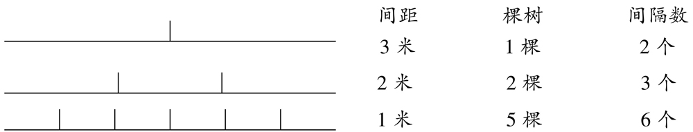
师：通过去找间隔数与棵树的关系你发现了什么？
生3：间隔数－1＝棵树。
师：因为我们研究的是两端都不植，因此要加上两端都不植。
板书：两端都不植：间隔数－1＝棵树。
师：回到原题，先在书上画出全长和间距，第一步求间隔数是几，第二步求棵树是几，第三步求两边都种要多少棵树。
因此列式为（板书）：
第一步：间隔数是几？
全长÷间距＝间隔数60÷3＝20
第二步：棵树是几？
20－1＝19（棵）
第三步：两边都种要多少棵？
19×2＝38（棵）
师：总结：两端都植树时：间隔数+1＝棵树。
两端都不植树：间隔数－1＝棵树，自己默默记一记。
师：（比手势，把手掌立起表示两端都栽，放平表示两端都不栽）帮助学生记忆。
该教师先把上一次课学习过的公式及公式的变形做了复习，并将公式与已经学习过的每份数×份数＝总数相联系。在讲授例2的过程中，非常重视学生对一些易混淆的概念进行理解，在探究的过程中重视思考、方法，化繁为简，以线段图将植树的情况表示出来，引导学生观察，从中发现了两端都不植时棵树与间隔数的关系，最后回到原题一步一步运用发现的规律解决问题，其步骤清晰、有条理。
师：除了这两种情况，还会有什么情况？
生（齐）：一端栽，一端不栽。
师：我们一起来看看这个时候棵树与间隔数有什么关系呢？还是画线段图，还是6米长，每隔2米、3米各种一棵。
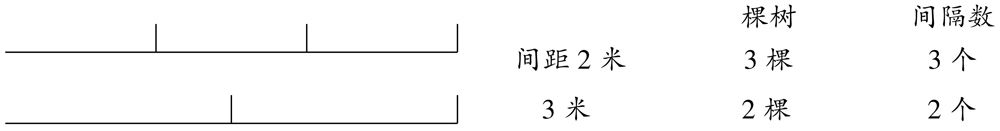
师：因此在只植一端的情况下，间隔数＝棵树。
师：给大家3分钟，看谁能够快速地记忆这三种情况下棵树与间隔数的关系。
生4：作图。
该教师在第三课时教学两端都不植的情况时，将只植一端的情况一起教学，同样采用画线段图观察的方式，找出了棵数与间隔数的关系。最后该教师注重学生学习之后对这三种情况下棵树与间隔数关系的记忆，采用直观的方式帮助学生记忆。
第四课时：
黑板上两个例题：
例1：一根木头长10米，要把它平均分成5段，每锯下一段要8分钟，锯完一共要花多少分钟？
例2：一栋楼有四层，每上一层楼要12级台阶，小明从一楼到4楼，一共需要上几级台阶？
一、复习导入
画图复习前面学习过的三种情况：
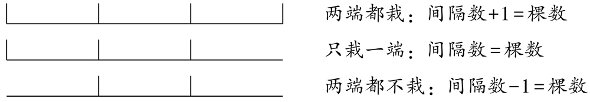
师：记不得的时候怎么办？
生：画个植树的简图或者画一个线段图。
二、新授
师：这节课要学习的是：第一要判断它是不是植树问题；第二要判断它是什么情况；第三要能根据规律解答题目。
例1教学：
师：全班读题，读完后根据你的第一感觉判断这是一个什么题。它和我们的植树问题有什么联系？
生（齐）：植树问题。
师：是的，此题中的问题可以转换成植树问题，老师用一支粉笔表示一根木头，看着老师是怎么锯的。
生（齐）：一段、两段……
师：现在，我们用一根线段来表示木头，我们会在端点去锯吗？
生1：不行，我们只能够在这个表示木头的线段的中间锯。
师：那锯成5段，每一段到底要多少米？
生2：告诉了全长和间隔数，5段就是间隔数，求间距。
第一步就是：间距是几，用10÷5＝2。
师：每隔2米就要锯一次，第一个2米处锯一次，第二个2米处锯一次……
师：所以以后遇到锯木头的题怎么办？
生（齐）：画图。
师：从刚才的分析看，锯一次相当于种了一棵树，段数等于间隔数，所以我们可以总结出，锯木头相当于植树问题中两端都不植的情况。所以在做这种题目时，重要的是找出锯了几次。
师：列式为：第一步：锯了几次？（棵树是几）
5－1＝4（次）
第二步：共用多少时间？
8×4＝32（分）
师：通过刚刚这道题，你知道了什么？
生3：锯木头是植树问题里面两端都不栽的情况，求这一类题目用两端都不栽的公式就可以。
师：打开课本第119页，把结论写在书上，然后做优化61页中的第二大题里的第五小题。
例2教学：
师：自己读题，然后思考，想一想第一层要爬吗？
生4：1楼教室不用爬，我们可以用画图的方法来做。
师：那相当于植树问题的哪种情况？
生5：两端都不栽。列式为，第一步：爬了几次楼梯？
4－1＝3次
第二步：一共要上几级？
3×12＝36级
师：谁能够总结一下我们今天学习的这两个题目？
生6：它们都是两端都不植的情况。
第四课时，该教师的设计是对前面三节课所学习公式的综合运用，例题选取了学生迁移运用存在困难的锯木头和爬楼梯。因此该教师一开始就告诉学生，要先判断它是植树问题，然后判断是植树问题中的哪一种情况。教师在运用知识前都很注重对公式的复习、巩固和记忆，在讲授例题的过程中都很直观，采用了实物粉笔和线段图，帮助学生建立起锯木头和爬楼梯都是两端都不栽的情况的认识。
该教师第一课时、第三课时与第五课时是对应教材上的三个例题设计的新课，第二课时有的老师放在第一课时一起完成。由于该教师非常注重学生对这些公式的掌握，因此单独用一个课时完成，第四课时是将知识用在非常典型的几个模型中。从该教师的课堂设计和上课的方式可以看出：该教师以双基教学为目标，非常重视基本知识、基本技能的掌握。
3．针对数学广角教学的访谈
研究者：老师，您怎么看待数学广角的教学？
数学广角学生难学，教师也难教。作为公开课，这一内容在其他班上过，学生上课的反应很好，但是依旧不会做题。所以我就采用了今天这样的教学设计。有些教师自己都不太明白教学内容设计的意图和价值，如我们学校的教师，对这个内容的学习主要是新教师听老教师的课，从老教师那里学习。虽然每学期我们学校都组织教研活动，比如本学期的教研内容就是植树问题，但是我们主要的意图还是老教师指导新教师，帮助新教师解决困难，所以对于这部分教学难以有新的突破。
研究者：老师，您设计这个课的时候是怎么想的呢？
教师D：我没有让学生都去活动，而是直接画出了线段图，学生很容易就发现了规律，其实发现这个规律不难，但是在实际的题目中运用这几个规律特别难，尤其是好多学生会找不准间距、间隔数，因此我特别注重让学生都画下来并标注好，这样可以保证他们套用公式时少出问题。在第四次课中设计的问题是奥数题，学生难理解，但是期末考会考到，以我以前的经验看，即使在考前复习了，期末考试中也最多只有三分之二的人会做对。
研究者：老师，那您认为学生学习植树问题这个内容时存在的困难是什么呢？
教师D：主要还是不能够灵活地运用公式，基本的还好，但是稍微变一下，很多学生就不会解答了，而且有时候不能够把题目与植树问题相联系，或者不能够判断题目属于三种情况中的哪一种，封闭图形植树也是一样的，从优化所做的练习来看，还有一大部分人没有理解，做不到知识的迁移。
研究者：老师，您怎么看待学生学习完这一内容之后的检测？
教师D：期末考试就考一道题，最多两题，一般上过之后不会做单元测试，也没有试卷讲评，只有到了期末的时候会回顾这些典型的题目，还有，在期末复习卷中出现的题，我会在课堂上讲一遍。我用了5个课时教学这个内容，已经算是很重视这个内容了，有些老师都不上这个内容，只是临近期末考试才开始做些题、背背公式。
研究者：老师，我们都知道数学广角有一个重要的目的，而且在现在的《课程标准》（2011）中也明确指出了发展学生的思维与积累活动经验，您是怎么看待您所在学校的思维渗透情况的呢？
教师D：我觉得还是基础的知识重要，学生的思维发展不能够离开具体的内容，所以我觉得教学中还是要先扎实地掌握基础知识，毕竟考试只用成绩来衡量教师的教学。而且思维的渗透，听上去是很容易的，似乎大家都懂，课改这么多年了，对这些概念老师们虽然耳熟能详，但还是太抽象，我们一线教师还是不太能理解透。我就不喜欢去参加那些公开课的比赛，以前参加的时候，也不完全是自己设计的课，到最后课里面融入了很多的东西。比如你刚刚说的思想方法渗透的体现，小组合作、探究学习等，但是那个都是表演的课，实际中，为了教学的效率和进度，一般是不会这样上课的。
根据教学内容和已有的研究可知，数学广角的教学内容属于事实、规则、动作的较少，主要是一些概念、模式和抽象理论，而针对后面三种教学内容，提出分析、综合和评价的问题会更利于培养学生的思维能力和创新能力。这类问题最好在提问之后，留足15秒的时间给学生思考。
1．给学生探索的空间，增加数学活动经验
学生的数学活动经验为数学学习和数学认知提供了基础。亲身的经历一般难以忘怀，逐渐增加学生学习数学的体验，会潜移默化增长学生解决问题的方法和对数学学习的兴趣。
2．鼓励学生提出数学问题
爱因斯坦曾说：“提出一个问题往往比解决一个问题更为重要，因为解一个问题也许只是一个数学上或实验上的技巧问题，而提出新的问题、新的可能性，从新的角度看旧问题，却需要创造性的想象力，而且标志着科学的真正进步。”在已有的课堂研究中已经提出过：在我国的基础教育中，学生提出问题的能力非常弱，数学广角的教学本身就是承载数学思想方法的一块内容，在数学广角的教学中学生很少能提出自己的问题，虽然学生都有了观察、找规律、归纳等意识，在进行一定的探究后，他们的思想会自然地朝这一方向进行，但是学生更多的是接受教师的直接讲授或者在教师的逐渐引导下发现规律，很少能够提出自己的看法或者质疑。在这一块的教学中，教师应减少掌控，让学生自由思考，有质问和批判精神尤为重要。
3．教师提问应向分析、综合、评价性问题发展
在优质课与常态课中，教师的提问往往以解释性问题居多，而深层次的问题较少，教师习惯于肢解问题，一点一点启发，这样较深层次的问题会被肢解，导致学生回答问题时更多的是提取知识、回忆经验，缺乏真正的思考。当然，解决问题时提取知识、回忆经验是必需的，但是仅停留在这一层次远远不够，而且习惯性地降低问题的难度也不是很好，因为总是提问低层次的问题不利于学生思维的发展。
4．灵活运用多种学习方法，符合学生特点，满足各种学生的需求
所有的老师都知道学生好动，一节课中能够集中注意力听课的时间在15分钟左右，小学生往往不能一节课都背着小手认真听讲。但是在追求高效与整齐划一的课堂中，学习的方式相对单调，因此与同学之间的讨论、共同学习对发展他们的人际能力尤为重要。
5．重视“双基”，同时发展学生的数学思维能力与创新能力，不能简单地“告诉”
“双基”教学是我国数学教育的传统，是我国数学教育的最大特点和优势，令我国学生在各种数学竞赛中屡获大奖。国际和国内的一些研究表明：中国的数学课堂偏向于整齐、讲授，学生被动接受，导致了学生思维和创新较弱，因此在20多年前我国的数学教育就倡导在教学中发展学生的数学思维和创新能力。经过这么多年的探索，我们仍旧坚持倡导以传统为基础，发展学生的思维和创新能力，坚持传统中好的，发展传统中没有的，培养符合社会需要的人才。但是在教学中简单地“告诉”、避开活动过程、从繁就简的做法是不对的，这如同蜻蜓点水般浅尝辄止，无法让学生体验数学思考。学生没有经历过，没有活动经验，就谈不上教学效果。这种舍本逐末的做法显然不可取。
[1] 吴正宪．小学数学课堂教学策略——师生互动共同创建有效课堂［M］．北京，北京师范大学出版社，2012.
[2] ［美］鲍里奇．有效教学方法［M］．易东平，译．南京：江苏教育出版社，2002.
[3] ［美］阿瑟·J·S·里德，韦尔娜·E·贝格曼．课堂观察、参与和反思［M］．伍新春，等，译．北京：教育科学出版社，2005.
[4] 裴娣娜．教学论［M］．北京：教育科学出版社，2007.